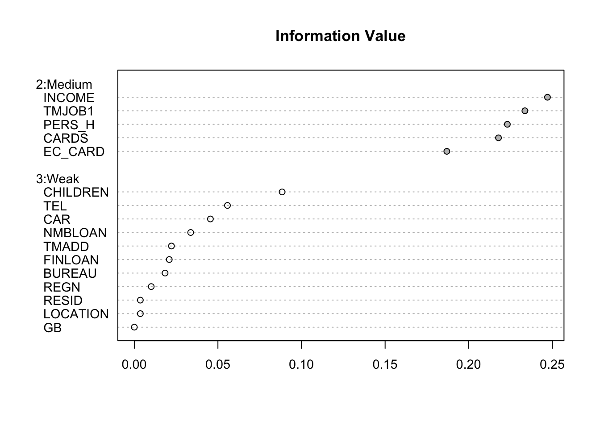
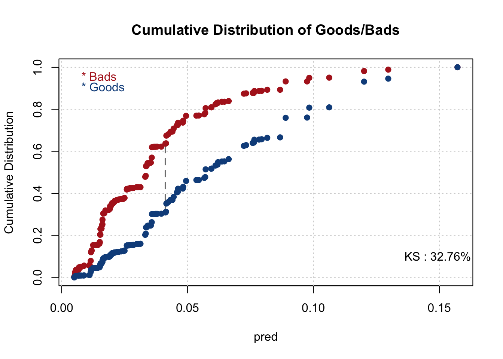
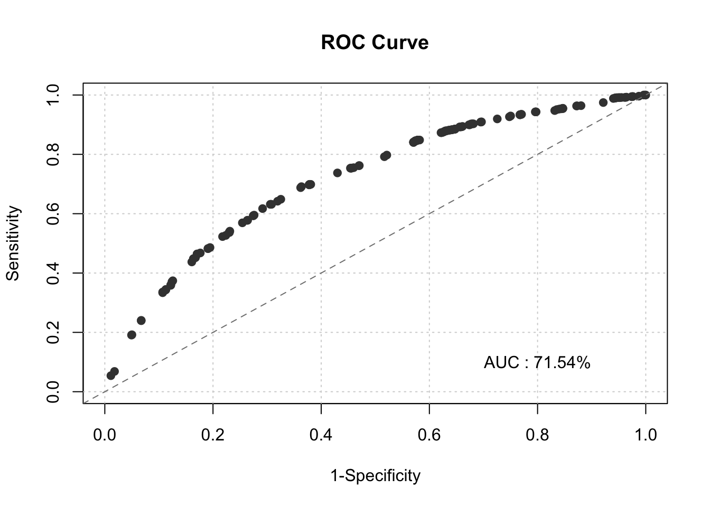
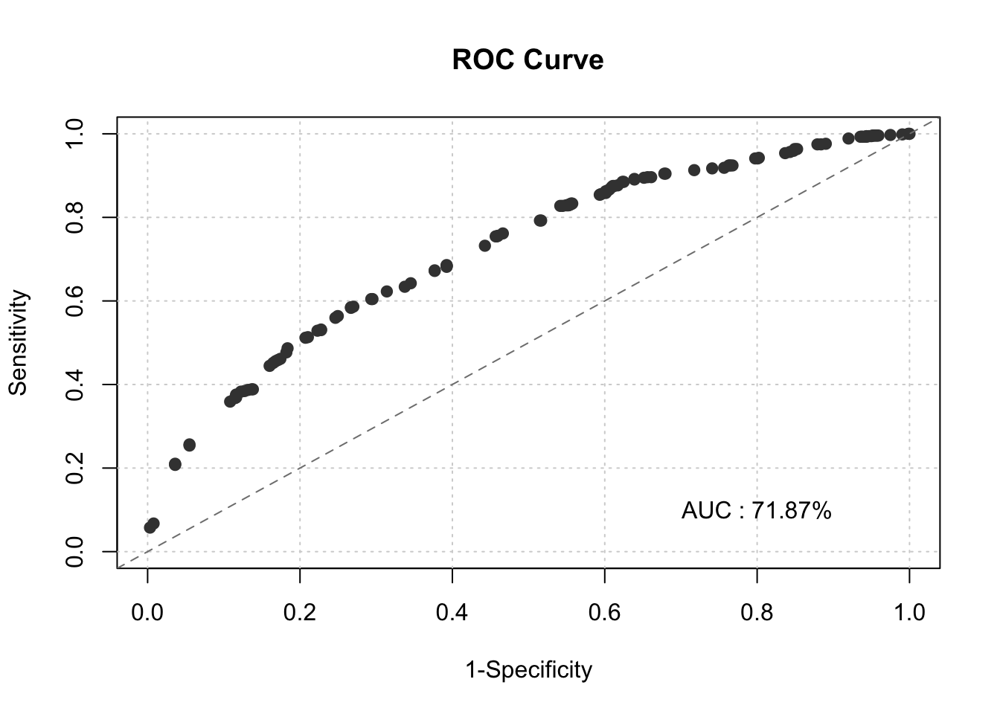

Chapter 6 Reject Inference - Clean & Prepare Reject Data
#altering the bands for each binning set in the results list in case there are any additional lower points or higher points in the rejects data
#this is mostly for the numeric values
#making sure bands change in our results_all_sig_char for accepts and rejects combined
#this shouldnt cause any issues in the binner and WoE creating as long as there are the same type of unique levels
#this will not run since these are categorical variables so no need to set band
# for(i in names(results_all_sig_char)) {
# results_all_sig_char[[i]]$bands[1] <- min(c(accepts[[i]], rejects[[i]]), na.rm = TRUE)
# results_all_sig_char[[i]]$bands[length(results_all_sig_char[[i]]$bands)] <- max(c(accepts[[i]], rejects[[i]]), na.rm = TRUE)
# }
#making sure bands change in our results_all_sig_num for accepts and rejects combined
for(i in names(results_all_sig_num)) {
results_all_sig_num[[i]]$bands[1] <- min(c(accepts[[i]], rejects[[i]]), na.rm = TRUE)
results_all_sig_num[[i]]$bands[length(results_all_sig_num[[i]]$bands)] <- max(c(accepts[[i]], rejects[[i]]), na.rm = TRUE)
}
#Getting the bins of the variables in the results_all_sig numeric
rejects_scored <- rejects
for(i in 1:length(results_all_sig_num)) {
rejects_scored <- smbinning.gen(df = rejects_scored, ivout = results_all_sig_num[[i]],
chrname = paste(results_all_sig_num[[i]]$x, "_bin", sep = ""))
}
for(i in 1:length(results_all_sig_char)) {
rejects_scored <- smbinning.factor.gen(df = rejects_scored, ivout = results_all_sig_char[[i]],
chrname = paste(results_all_sig_char[[i]]$x, "_bin", sep = ""))
}
results_all_sig_AR=append(results_all_sig_num,results_all_sig_char)Getting the WoE values for our Rejects Bins we Just Created -This wont work if the levels of the categories are not the same across the rejects and accepts data for the significant categorical vars in the results list -This also wont work if our bands for the numeric sig vars are not altered to account for both the accepts and the rejects
for (j in 1:length(results_all_sig_AR)) {
for (i in 1:nrow(rejects_scored)) {
bin_name <- paste(results_all_sig_AR[[j]]$x, "_bin", sep = "")
bin <- substr(rejects_scored[[bin_name]][i], 2, 2)
woe_name <- paste(results_all_sig_AR[[j]]$x, "_WOE", sep = "")
if(bin == 0) {
bin <- dim(results_all_sig_AR[[j]]$ivtable)[1] - 1
rejects_scored[[woe_name]][i] <- results_all_sig_AR[[j]]$ivtable[bin, "WoE"]
} else {
rejects_scored[[woe_name]][i] <- results_all_sig_AR[[j]]$ivtable[bin, "WoE"]
}
}
}
head(rejects_scored)## CHILDREN PERS_H TMADD TMJOB1 TEL NMBLOAN FINLOAN INCOME EC_CARD BUREAU LOCATION LOANS REGN CASH PRODUCT RESID
## 1 0 1 6 18 1 0 0 0 1 3 1 0 0 500 Dept. Store,Mail Lease
## 2 1 2 84 54 1 0 0 2500 0 2 1 0 3 1700 Furniture,Carpet Lease
## 3 1 3 36 108 2 0 1 2600 0 1 1 2 0 900 Radio, TV, Hifi Owner
## 4 2 3 168 15 1 0 0 1600 0 3 1 0 0 1200 Radio, TV, Hifi <NA>
## 5 0 1 240 9 2 0 0 0 1 3 1 0 0 4000 Furniture,Carpet Lease
## 6 2 4 30 9 2 2 0 1700 0 3 1 0 0 2000 Radio, TV, Hifi Lease
## PROF CAR CARDS TMJOB1_bin INCOME_bin PERS_H_bin CARDS_bin EC_CARD_bin TMJOB1_WOE
## 1 Others Car Cheque card 01 <= 30 01 <= 0 01 = '1' 01 = 'Cheque card' 02 = '1' -0.3991
## 2 Food,Building,Ca Without Vehicle no credit cards 02 <= 144 02 > 0 02 = '2' 03 = 'no credit cards' 01 = '0' 0.0533
## 3 Others Car no credit cards 02 <= 144 02 > 0 03 = '3' 03 = 'no credit cards' 01 = '0' 0.0533
## 4 Others Without Vehicle no credit cards 01 <= 30 02 > 0 03 = '3' 03 = 'no credit cards' 01 = '0' -0.3991
## 5 Others Without Vehicle Cheque card 01 <= 30 01 <= 0 01 = '1' 01 = 'Cheque card' 02 = '1' -0.3991
## 6 Others Without Vehicle no credit cards 01 <= 30 02 > 0 04 = '4' 03 = 'no credit cards' 01 = '0' -0.3991
## INCOME_WOE PERS_H_WOE CARDS_WOE EC_CARD_WOE
## 1 0.6767 -0.5239 0.6846 0.6846
## 2 -0.2075 0.4283 -0.2663 -0.2313
## 3 -0.2075 0.3172 -0.2663 -0.2313
## 4 -0.2075 0.3172 -0.2663 -0.2313
## 5 0.6767 -0.5239 0.6846 0.6846
## 6 -0.2075 0.2948 -0.2663 -0.2313#getting the scores for rejects data from our initial model we made
pdo <- 50
score <- 500
odds <- 20
fact <- pdo/log(2)
os <- score - fact*log(odds)
var_names <- names(initial_score$coefficients[-1])
for(i in var_names) {
beta <- initial_score$coefficients[i]
beta0 <- initial_score$coefficients["(Intercept)"]
nvar <- length(var_names)
WOE_var <- rejects_scored[[i]]
points_name <- paste(str_sub(i, end = -4), "points", sep="")
rejects_scored[[points_name]] <- -(WOE_var*(beta) + (beta0/nvar))*fact + os/nvar
}
colini <- (ncol(rejects_scored)-nvar + 1)
colend <- ncol(rejects_scored)
rejects_scored$Score <- rowSums(rejects_scored[, colini:colend])Parceling our Rejects Data to get our GB variable
parc <- seq(200, 500, 25)
accepts_scored$Score_parc <- cut(accepts_scored$Score, breaks = parc)
rejects_scored$Score_parc <- cut(rejects_scored$Score, breaks = parc)
table(accepts_scored$Score_parc, accepts_scored$GB)##
## 0 1
## (200,225] 0 0
## (225,250] 1 7
## (250,275] 121 336
## (275,300] 121 238
## (300,325] 257 326
## (325,350] 328 288
## (350,375] 143 92
## (375,400] 202 85
## (400,425] 233 110
## (425,450] 13 3
## (450,475] 74 15
## (475,500] 7 0parc_perc <- table(accepts_scored$Score_parc, accepts_scored$GB)[,2]/rowSums(table(accepts_scored$Score_parc, accepts_scored$GB))
rejects$GB <- 0
rej_bump <- 1.25
for(i in 1:(length(parc)-1)) {
for(j in 1:length(rejects_scored$Score)) {
if((rejects_scored$Score[j] > parc[i]) &
(rejects_scored$Score[j] <= parc[i+1]) &
(runif(n = 1, min = 0, max = 1) < (rej_bump*parc_perc[i]))) {
rejects$GB[j] <- 1
}
}
}
table(rejects_scored$Score_parc, rejects$GB)##
## 0 1
## (200,225] 0 0
## (225,250] 0 2
## (250,275] 25 321
## (275,300] 28 165
## (300,325] 111 254
## (325,350] 126 183
## (350,375] 30 30
## (375,400] 69 38
## (400,425] 65 29
## (425,450] 4 1
## (450,475] 7 3
## (475,500] 9 0Verifying the Weights
#goods are weighted by 30
#take the population of bads and divide it by the population of goods times the weight given
1500/(1500*30)## [1] 0.03333333## [1] 30.95975#you get .0333--> 3.33%which is essentially the populations bad rate of 3.23%
#could also take the population percentage of bad and put it under 1 to get what the actual weights should be which are 30.95975
pop_g <- 0.9677
pop_b <- 0.0323
sam_g <- 1500
sam_b <- 1500
#verifying the initial weigths of 30 for the accepts dataset
Weight_Of_Good_AcceptsDF=(pop_g/pop_b)/(sam_g/sam_b)
Weight_Of_Good_AcceptsDF## [1] 29.95975Adjusting the weights of Good to Bad for our Accepts and Rejects Data Set
# rejects_scored$pred <- predict(initial_score, newdata=rejects_scored, type='response')
# rejects$GB <- as.numeric(rejects_scored$pred > 0.0617)
# rejects$good <- abs(rejects$GB - 1)
pop_g <- 0.9677
pop_b <- 0.0323
sam_g <- 1500
sam_b <- 1500
pop_sam_gb_ratio <- (pop_g/pop_b)/(sam_g/sam_b)
pop_a <- 0.75
pop_r <- 0.25
sam_a <- 3000
sam_r <- 1500
pop_sam_ar_ratio <- (pop_a/pop_r)/(sam_a/sam_r)
weight_rb <- 1
weight_rg <- pop_sam_gb_ratio
weight_ab <- pop_sam_ar_ratio
weight_ag <- pop_sam_ar_ratio*pop_sam_gb_ratio
accepts$weight_ar <- ifelse(accepts$GB == 1, weight_ab, weight_ag)
rejects$weight_ar <- ifelse(rejects$GB == 1, weight_rb, weight_rg)
comb_parc <- rbind(accepts[, !(names(accepts) == '_freq_')], rejects) # New Combined Data Set #comb <- comb_parc # Select which data set you want to use from above techniques #
set.seed(0119)
train_id <- sample(seq_len(nrow(comb)), size = floor(0.70*nrow(comb)))
train_comb <- comb[train_id, ]
test_comb <- comb[-train_id, ]
iv_summary_comb <- smbinning.sumiv(df = train_comb, y = "good")##
##
|
| | 0%
|
|-- | 5%## Warning in rbind(deparse.level, ...): number of columns of result, 14, is not a multiple of vector length 13 of arg 2##
|
|----- | 9%## Warning in rbind(deparse.level, ...): number of columns of result, 14, is not a multiple of vector length 13 of arg 2##
|
|------- | 14%## Warning in rbind(deparse.level, ...): number of columns of result, 14, is not a multiple of vector length 13 of arg 2##
|
|--------- | 18%## Warning in rbind(deparse.level, ...): number of columns of result, 14, is not a multiple of vector length 13 of arg 2##
|
|----------- | 23%## Warning in rbind(deparse.level, ...): number of columns of result, 14, is not a multiple of vector length 13 of arg 2##
|
|-------------- | 27%## Warning in rbind(deparse.level, ...): number of columns of result, 14, is not a multiple of vector length 13 of arg 2##
|
|---------------- | 32%## Warning in rbind(deparse.level, ...): number of columns of result, 14, is not a multiple of vector length 13 of arg 2##
|
|------------------ | 36%## Warning in rbind(deparse.level, ...): number of columns of result, 14, is not a multiple of vector length 13 of arg 2##
|
|-------------------- | 41%## Warning in rbind(deparse.level, ...): number of columns of result, 14, is not a multiple of vector length 13 of arg 2##
|
|----------------------- | 45%## Warning in rbind(deparse.level, ...): number of columns of result, 14, is not a multiple of vector length 13 of arg 2##
|
|------------------------- | 50%
|
|--------------------------- | 55%## Warning in rbind(deparse.level, ...): number of columns of result, 14, is not a multiple of vector length 13 of arg 2##
|
|------------------------------ | 59%
|
|-------------------------------- | 64%
|
|---------------------------------- | 68%
|
|------------------------------------ | 73%
|
|--------------------------------------- | 77%## Warning in rbind(deparse.level, ...): number of columns of result, 14, is not a multiple of vector length 13 of arg 2##
|
|----------------------------------------- | 82%## Warning in rbind(deparse.level, ...): number of columns of result, 14, is not a multiple of vector length 13 of arg 2##
|
|------------------------------------------- | 86%## Warning in rbind(deparse.level, ...): number of columns of result, 14, is not a multiple of vector length 13 of arg 2##
|
|--------------------------------------------- | 91%
|
|------------------------------------------------ | 95%
|
|--------------------------------------------------| 100%
## 
## Char IV Process
## 8 INCOME 0.2471 Numeric binning OK
## 4 TMJOB1 0.2336 Numeric binning OK
## 2 PERS_H 0.2231 Factor binning OK
## 19 CARDS 0.2178 Factor binning OK
## 9 EC_CARD 0.1869 Factor binning OK
## 1 CHILDREN 0.0884 Factor binning OK
## 5 TEL 0.0557 Factor binning OK
## 18 CAR 0.0455 Factor binning OK
## 6 NMBLOAN 0.0337 Factor binning OK
## 3 TMADD 0.0222 Numeric binning OK
## 7 FINLOAN 0.0209 Factor binning OK
## 10 BUREAU 0.0184 Factor binning OK
## 13 REGN 0.0101 Factor binning OK
## 11 LOCATION 0.0036 Factor binning OK
## 16 RESID 0.0036 Factor binning OK
## 20 GB 0.0000 Factor binning OKimp_vars_comb=NULL
for (i in 1:length(iv_summary_comb$Char)){
if (iv_summary_comb$IV[i]>=.10){
imp_vars_comb=append(imp_vars_comb, iv_summary_comb$Char[i])
}
}
#just using train 0 to just get the important vars names
train_comb0=train_comb[,c(imp_vars_comb)]
num_names_comb0 = names(train_comb0)[sapply(train_comb0, is.numeric)] # Gathering the names of numeric variables in data #
results_all_sig_comb_num = list()
results_all_sig_comb_char = list()
for(i in 1:length(num_names_comb0)){
results_all_sig_comb_num[[num_names_comb0[i]]] <- smbinning(df = train_comb, y = "good", x = num_names_comb0[i])
}## Warning in rbind(deparse.level, ...): number of columns of result, 14, is not a multiple of vector length 13 of arg 2
## Warning in rbind(deparse.level, ...): number of columns of result, 14, is not a multiple of vector length 13 of arg 2char_names_comb0 =names(train_comb0)[sapply(train_comb0, is.factor)]
for(i in 1:length(char_names_comb0)){
results_all_sig_comb_char[[char_names_comb0[i]]] <- smbinning.factor(df = train_comb, y = "good", x = char_names_comb0[i])
}## Warning in rbind(deparse.level, ...): number of columns of result, 14, is not a multiple of vector length 13 of arg 2
## Warning in rbind(deparse.level, ...): number of columns of result, 14, is not a multiple of vector length 13 of arg 2
## Warning in rbind(deparse.level, ...): number of columns of result, 14, is not a multiple of vector length 13 of arg 2# Generating Variables of Bins #
for(i in 1:length(results_all_sig_comb_num)) {
train_comb <- smbinning.gen(df = train_comb, ivout = results_all_sig_comb_num[[i]],
chrname = paste(results_all_sig_comb_num[[i]]$x, "_bin", sep = ""))
}
for(i in 1:length(results_all_sig_comb_char)) {
train_comb <- smbinning.factor.gen(df = train_comb, ivout = results_all_sig_comb_char[[i]],
chrname = paste(results_all_sig_comb_char[[i]]$x, "_bin", sep = ""))
}
# Generating Variables WOE Values from Bins just created #
results_all_sig_comb=append(results_all_sig_comb_num,results_all_sig_comb_char)
for (j in 1:length(results_all_sig_comb)) {
for (i in 1:nrow(train_comb)) {
bin_name <- paste(results_all_sig_comb[[j]]$x, "_bin", sep = "")
bin <- substr(train_comb[[bin_name]][i], 2, 2)
woe_name <- paste(results_all_sig_comb[[j]]$x, "_WOE", sep = "")
if(bin == 0) {
bin <- dim(results_all_sig_comb[[j]]$ivtable)[1] - 1
train_comb[[woe_name]][i] <- results_all_sig_comb[[j]]$ivtable[bin, "WoE"]
} else {
train_comb[[woe_name]][i] <- results_all_sig_comb[[j]]$ivtable[bin, "WoE"]
}
}
}Building Model ON Combined Data
test_comb$GB=ifelse(test_comb$GB=="0",0,1)
train_comb$GB=ifelse(train_comb$GB=="0",0,1)
#watch out for quasi complete sep in the categorical vars--might need to combine levels
final_score <- glm(GB ~
TMJOB1_WOE +
INCOME_WOE +
CARDS_WOE +
PERS_H_WOE,
#EC_CARD_WOE, #dogwater predictor
data = train_comb,
weights = as.numeric(train_comb$weight_ar),
family = "binomial")## Warning in eval(family$initialize): non-integer #successes in a binomial glm!##
## Call:
## glm(formula = GB ~ TMJOB1_WOE + INCOME_WOE + CARDS_WOE + PERS_H_WOE,
## family = "binomial", data = train_comb, weights = as.numeric(train_comb$weight_ar))
##
## Coefficients:
## Estimate Std. Error z value Pr(>|z|)
## (Intercept) -3.14125 0.02248 -139.728 < 0.0000000000000002 ***
## TMJOB1_WOE -0.79840 0.04955 -16.113 < 0.0000000000000002 ***
## INCOME_WOE -0.35378 0.06194 -5.712 0.0000000112 ***
## CARDS_WOE -0.75346 0.06927 -10.877 < 0.0000000000000002 ***
## PERS_H_WOE -0.80497 0.04482 -17.961 < 0.0000000000000002 ***
## ---
## Signif. codes: 0 '***' 0.001 '**' 0.01 '*' 0.05 '.' 0.1 ' ' 1
##
## (Dispersion parameter for binomial family taken to be 1)
##
## Null deviance: 19670 on 3149 degrees of freedom
## Residual deviance: 18374 on 3145 degrees of freedom
## AIC: 21647
##
## Number of Fisher Scoring iterations: 6## CHILDREN PERS_H TMADD TMJOB1 TEL NMBLOAN FINLOAN INCOME EC_CARD BUREAU LOCATION LOANS REGN CASH PRODUCT RESID
## 1064 0 1 42 27 2 2 1 0 0 1 1 4 4 2000 Radio or TV or Hifi Lease
## 2376 0 1 240 27 2 0 0 0 1 3 1 0 6 500 Cars Lease
## 2861 0 1 9 6 1 0 1 1900 0 3 1 0 4 1000 Radio or TV or Hifi <NA>
## 2277 1 2 18 30 1 0 0 2000 0 3 1 0 0 1700 Furniture or Carpet Lease
## 2773 1 3 15 9 2 0 0 1500 0 3 1 0 6 1600 Radio or TV or Hifi <NA>
## 387 0 2 120 120 1 0 0 1800 1 1 1 1 0 1200 Radio or TV or Hifi <NA>
## 1108 2 4 30 24 2 0 0 4000 0 1 1 1 5 1300 Radio or TV or Hifi Lease
## 2363 1 2 96 27 2 0 1 10000 0 1 1 1 0 1700 Radio or TV or Hifi Lease
## 1445 0 1 42 6 2 2 1 3000 0 1 1 1 3 500 Dept. Store or Mail Lease
## 2680 1 3 30 12 2 0 0 1600 0 1 1 2 9 1900 Cars Lease
## 1922 0 1 240 60 1 2 0 0 1 1 1 1 0 700 Furniture or Carpet Lease
## 2265 0 1 3 30 2 2 1 0 1 1 1 2 5 1100 Cars Lease
## 596 2 4 18 66 2 0 1 5000 0 3 1 0 8 900 Cars Lease
## 1381 3 5 36 9 2 2 1 2500 0 1 1 2 0 600 Radio or TV or Hifi Lease
## 2204 0 1 144 36 1 0 0 1700 0 3 1 0 5 500 Radio or TV or Hifi <NA>
## 492 0 1 240 96 1 0 1 0 1 1 1 1 0 1300 Cars Lease
## 1287 0 1 168 15 2 0 0 2000 1 3 1 0 2 1000 Radio or TV or Hifi <NA>
## 2161 0 1 264 39 1 0 0 1700 0 3 1 0 0 3000 Furniture or Carpet Lease
## 2427 2 4 84 24 1 0 0 1900 0 3 1 0 0 800 Dept. Store or Mail <NA>
## 854 1 3 30 39 2 0 0 1800 0 1 1 1 7 500 Radio or TV or Hifi Lease
## 800 0 1 120 45 2 2 1 2500 0 1 1 1 4 1200 Radio or TV or Hifi <NA>
## 577 1 3 72 72 2 2 1 0 1 1 1 1 3 1100 Radio or TV or Hifi Lease
## 1390 0 1 66 9 1 0 0 0 1 1 1 1 0 1400 Radio or TV or Hifi <NA>
## 180 1 3 120 216 2 2 1 3300 0 1 1 1 4 500 Furniture or Carpet Lease
## 1563 2 4 84 216 2 0 1 2300 0 1 1 1 5 900 Radio or TV or Hifi Lease
## 2706 4 5 108 12 2 0 0 1000 0 1 1 0 3 500 Radio or TV or Hifi Lease
## PROF CAR CARDS GB _freq_ good TMJOB1_bin INCOME_bin PERS_H_bin CARDS_bin
## 1064 Self-employed pe Car Mastercard/Euroc 0 30 1 01 <= 30 01 <= 0 01 = '1' 02 = 'Mastercard/Euroc'
## 2376 Others Car Cheque card 1 1 0 01 <= 30 01 <= 0 01 = '1' 01 = 'Cheque card'
## 2861 Civil Service Without Vehicle no credit cards 1 1 0 01 <= 30 02 > 0 01 = '1' 03 = 'no credit cards'
## 2277 Military Service Car no credit cards 1 1 0 01 <= 30 02 > 0 02 = '2' 03 = 'no credit cards'
## 2773 Others Without Vehicle no credit cards 1 1 0 01 <= 30 02 > 0 03 = '3' 03 = 'no credit cards'
## 387 Others Car Cheque card 0 30 1 02 <= 144 02 > 0 02 = '2' 01 = 'Cheque card'
## 1108 Others Car no credit cards 0 30 1 01 <= 30 02 > 0 04 = '4' 03 = 'no credit cards'
## 2363 Self-employed pe Car no credit cards 1 1 0 01 <= 30 02 > 0 02 = '2' 03 = 'no credit cards'
## 1445 Food or Building Car no credit cards 0 30 1 01 <= 30 02 > 0 01 = '1' 03 = 'no credit cards'
## 2680 Others Car no credit cards 1 1 0 01 <= 30 02 > 0 03 = '3' 03 = 'no credit cards'
## 1922 Others Without Vehicle Cheque card 1 1 0 02 <= 144 01 <= 0 01 = '1' 01 = 'Cheque card'
## 2265 Others Car Cheque card 1 1 0 01 <= 30 01 <= 0 01 = '1' 01 = 'Cheque card'
## 596 Others Car no credit cards 0 30 1 02 <= 144 02 > 0 04 = '4' 03 = 'no credit cards'
## 1381 Others Car no credit cards 0 30 1 01 <= 30 02 > 0 05 = '5' 03 = 'no credit cards'
## 2204 Others Without Vehicle no credit cards 1 1 0 02 <= 144 02 > 0 01 = '1' 03 = 'no credit cards'
## 492 Others Car Cheque card 0 30 1 02 <= 144 01 <= 0 01 = '1' 01 = 'Cheque card'
## 1287 Others Without Vehicle Cheque card 0 30 1 01 <= 30 02 > 0 01 = '1' 01 = 'Cheque card'
## 2161 Others Car no credit cards 1 1 0 02 <= 144 02 > 0 01 = '1' 03 = 'no credit cards'
## 2427 Food or Building Without Vehicle no credit cards 1 1 0 01 <= 30 02 > 0 04 = '4' 03 = 'no credit cards'
## 854 Others Without Vehicle no credit cards 0 30 1 02 <= 144 02 > 0 03 = '3' 03 = 'no credit cards'
## 800 State or Steel Ind Without Vehicle no credit cards 0 30 1 02 <= 144 02 > 0 01 = '1' 03 = 'no credit cards'
## 577 Others Car Cheque card 0 30 1 02 <= 144 01 <= 0 03 = '3' 01 = 'Cheque card'
## 1390 Food or Building Car Cheque card 0 30 1 01 <= 30 01 <= 0 01 = '1' 01 = 'Cheque card'
## 180 Others Without Vehicle no credit cards 0 30 1 03 > 144 02 > 0 03 = '3' 03 = 'no credit cards'
## 1563 Food or Building Car no credit cards 1 1 0 03 > 144 02 > 0 04 = '4' 03 = 'no credit cards'
## 2706 Food or Building Car no credit cards 1 1 0 01 <= 30 02 > 0 05 = '5' 03 = 'no credit cards'
## EC_CARD_bin TMJOB1_WOE INCOME_WOE PERS_H_WOE CARDS_WOE EC_CARD_WOE pred TMJOB1_points INCOME_points CARDS_points
## 1064 01 = '0' -0.3991 0.6767 -0.5239 0.8075 -0.2313 0.3374844 57.36191 77.46943 146.09702
## 2376 02 = '1' -0.3991 0.6767 -0.5239 0.6846 0.6846 0.3678084 57.36191 77.46943 136.51072
## 2861 01 = '0' -0.3991 -0.2075 -0.5239 -0.2663 -0.2313 0.5949340 57.36191 84.84137 62.33974
## 2277 01 = '0' -0.3991 -0.2075 0.4283 -0.2663 -0.2313 0.3992090 57.36191 84.84137 62.33974
## 2773 01 = '0' -0.3991 -0.2075 0.3172 -0.2663 -0.2313 0.4215977 57.36191 84.84137 62.33974
## 387 02 = '1' 0.0533 -0.2075 0.4283 0.6846 0.6846 0.1368591 86.55021 84.84137 136.51072
## 1108 01 = '0' -0.3991 -0.2075 0.2948 -0.2663 -0.2313 0.4261542 57.36191 84.84137 62.33974
## 2363 01 = '0' -0.3991 -0.2075 0.4283 -0.2663 -0.2313 0.3992090 57.36191 84.84137 62.33974
## 1445 01 = '0' -0.3991 -0.2075 -0.5239 -0.2663 -0.2313 0.5949340 57.36191 84.84137 62.33974
## 2680 01 = '0' -0.3991 -0.2075 0.3172 -0.2663 -0.2313 0.4215977 57.36191 84.84137 62.33974
## 1922 02 = '1' 0.0533 0.6767 -0.5239 0.6846 0.6846 0.2796363 86.55021 77.46943 136.51072
## 2265 02 = '1' -0.3991 0.6767 -0.5239 0.6846 0.6846 0.3678084 57.36191 77.46943 136.51072
## 596 01 = '0' 0.0533 -0.2075 0.2948 -0.2663 -0.2313 0.3313257 86.55021 84.84137 62.33974
## 1381 01 = '0' -0.3991 -0.2075 0.0426 -0.2663 -0.2313 0.4781434 57.36191 84.84137 62.33974
## 2204 01 = '0' 0.0533 -0.2075 -0.5239 -0.2663 -0.2313 0.4949414 86.55021 84.84137 62.33974
## 492 02 = '1' 0.0533 0.6767 -0.5239 0.6846 0.6846 0.2796363 86.55021 77.46943 136.51072
## 1287 02 = '1' -0.3991 -0.2075 -0.5239 0.6846 0.6846 0.3443819 57.36191 84.84137 136.51072
## 2161 01 = '0' 0.0533 -0.2075 -0.5239 -0.2663 -0.2313 0.4949414 86.55021 84.84137 62.33974
## 2427 01 = '0' -0.3991 -0.2075 0.2948 -0.2663 -0.2313 0.4261542 57.36191 84.84137 62.33974
## 854 01 = '0' 0.0533 -0.2075 0.3172 -0.2663 -0.2313 0.3272050 86.55021 84.84137 62.33974
## 800 01 = '0' 0.0533 -0.2075 -0.5239 -0.2663 -0.2313 0.4949414 86.55021 84.84137 62.33974
## 577 02 = '1' 0.0533 0.6767 0.3172 0.6846 0.6846 0.1615304 86.55021 77.46943 136.51072
## 1390 02 = '1' -0.3991 0.6767 -0.5239 0.6846 0.6846 0.3678084 57.36191 77.46943 136.51072
## 180 01 = '0' 0.9852 -0.2075 0.3172 -0.2663 -0.2313 0.1744569 146.67527 84.84137 62.33974
## 1563 01 = '0' 0.9852 -0.2075 0.2948 -0.2663 -0.2313 0.1771605 146.67527 84.84137 62.33974
## 2706 01 = '0' -0.3991 -0.2075 0.0426 -0.2663 -0.2313 0.4781434 57.36191 84.84137 62.33974
## PERS_H_points Score
## 1064 51.63192 332.5603
## 2376 51.63192 322.9740
## 2861 51.63192 256.1750
## 2277 108.84651 313.3895
## 2773 102.17087 306.7139
## 387 108.84651 416.7488
## 1108 100.82493 305.3680
## 2363 108.84651 313.3895
## 1445 51.63192 256.1750
## 2680 102.17087 306.7139
## 1922 51.63192 352.1623
## 2265 51.63192 322.9740
## 596 100.82493 334.5563
## 1381 85.67105 290.2141
## 2204 51.63192 285.3632
## 492 51.63192 352.1623
## 1287 51.63192 330.3459
## 2161 51.63192 285.3632
## 2427 100.82493 305.3680
## 854 102.17087 335.9022
## 800 51.63192 285.3632
## 577 102.17087 402.7012
## 1390 51.63192 322.9740
## 180 102.17087 396.0273
## 1563 100.82493 394.6813
## 2706 85.67105 290.2141
## [ reached 'max' / getOption("max.print") -- omitted 2074 rows ]train_comb$pred <- final_score$fitted.values
smbinning.metrics(dataset = train_comb, prediction = "pred", actualclass = "GB", report = 1)##
## Overall Performance Metrics
## --------------------------------------------------
## KS : 0.3276 (Fair)
## AUC : 0.7154 (Fair)
##
## Classification Matrix
## --------------------------------------------------
## Cutoff (>=) : 0.0415 (Optimal)
## True Positives (TP) : 1253
## False Positives (FP) : 486
## False Negatives (FN) : 560
## True Negatives (TN) : 851
## Total Positives (P) : 1813
## Total Negatives (N) : 1337
##
## Business/Performance Metrics
## --------------------------------------------------
## %Records>=Cutoff : 0.5521
## Good Rate : 0.7205 (Vs 0.5756 Overall)
## Bad Rate : 0.2795 (Vs 0.4244 Overall)
## Accuracy (ACC) : 0.6679
## Sensitivity (TPR) : 0.6911
## False Neg. Rate (FNR) : 0.3089
## False Pos. Rate (FPR) : 0.3635
## Specificity (TNR) : 0.6365
## Precision (PPV) : 0.7205
## False Discovery Rate : 0.2795
## False Omision Rate : 0.3969
## Inv. Precision (NPV) : 0.6031
##
## Note: 0 rows deleted due to missing data.smbinning.metrics(dataset = train_comb, prediction = "pred", actualclass = "GB", report = 0, plot = "ks")
smbinning.metrics(dataset = train_comb, prediction = "pred", actualclass = "GB", report = 0, plot = "auc") checking model on our combined test data
for(i in 1:length(results_all_sig_comb_num)) {
test_comb <- smbinning.gen(df = test_comb, ivout = results_all_sig_comb_num[[i]],
chrname = paste(results_all_sig_comb_num[[i]]$x, "_bin", sep = ""))
}
for(i in 1:length(results_all_sig_comb_char)) {
test_comb <- smbinning.factor.gen(df = test_comb, ivout = results_all_sig_comb_char[[i]],
chrname = paste(results_all_sig_comb_char[[i]]$x, "_bin", sep = ""))
}
for (j in 1:length(results_all_sig_comb)) {
for (i in 1:nrow(test_comb)) {
bin_name <- paste(results_all_sig_comb[[j]]$x, "_bin", sep = "")
bin <- substr(test_comb[[bin_name]][i], 2, 2)
woe_name <- paste(results_all_sig_comb[[j]]$x, "_WOE", sep = "")
if(bin == 0) {
bin <- dim(results_all_sig_comb[[j]]$ivtable)[1] - 1
test_comb[[woe_name]][i] <- results_all_sig_comb[[j]]$ivtable[bin, "WoE"]
} else {
test_comb[[woe_name]][i] <- results_all_sig_comb[[j]]$ivtable[bin, "WoE"]
}
}
}
test_comb$pred <- predict(final_score, newdata=test_comb, type='response')
smbinning.metrics(dataset = test_comb, prediction = "pred", actualclass = "GB", report = 1)##
## Overall Performance Metrics
## --------------------------------------------------
## KS : 0.3180 (Fair)
## AUC : 0.7187 (Fair)
##
## Classification Matrix
## --------------------------------------------------
## Cutoff (>=) : 0.0461 (Optimal)
## True Positives (TP) : 417
## False Positives (FP) : 170
## False Negatives (FN) : 296
## True Negatives (TN) : 467
## Total Positives (P) : 713
## Total Negatives (N) : 637
##
## Business/Performance Metrics
## --------------------------------------------------
## %Records>=Cutoff : 0.4348
## Good Rate : 0.7104 (Vs 0.5281 Overall)
## Bad Rate : 0.2896 (Vs 0.4719 Overall)
## Accuracy (ACC) : 0.6548
## Sensitivity (TPR) : 0.5849
## False Neg. Rate (FNR) : 0.4151
## False Pos. Rate (FPR) : 0.2669
## Specificity (TNR) : 0.7331
## Precision (PPV) : 0.7104
## False Discovery Rate : 0.2896
## False Omision Rate : 0.3879
## Inv. Precision (NPV) : 0.6121
##
## Note: 0 rows deleted due to missing data.smbinning.metrics(dataset = test_comb, prediction = "pred", actualclass = "GB", report = 0, plot = "ks")smbinning.metrics(dataset = test_comb, prediction = "pred", actualclass = "GB", report = 0, plot = "auc")